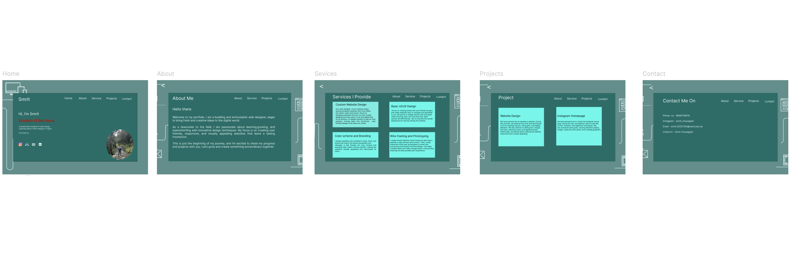
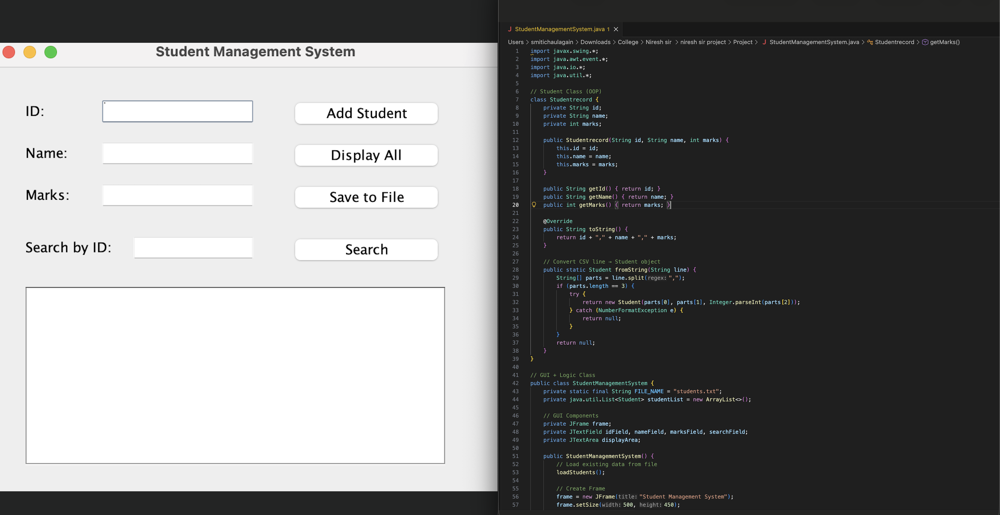
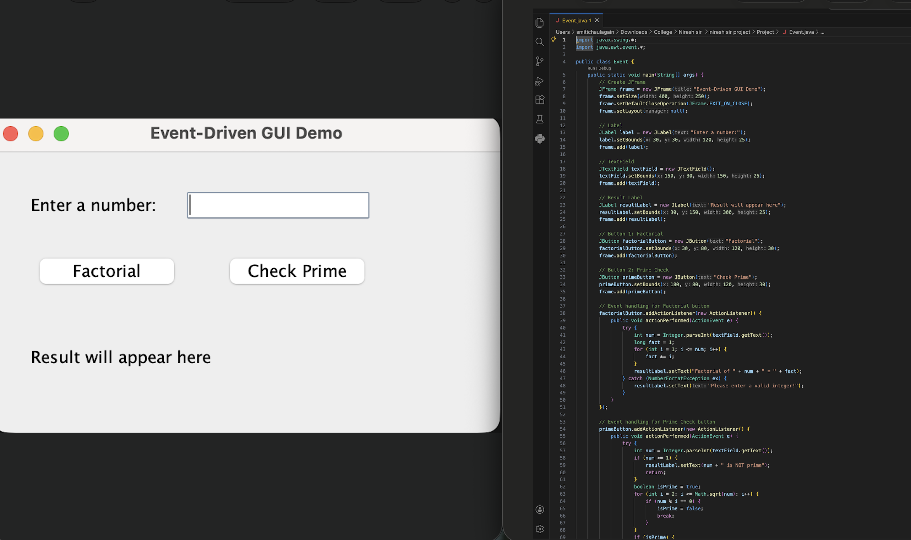
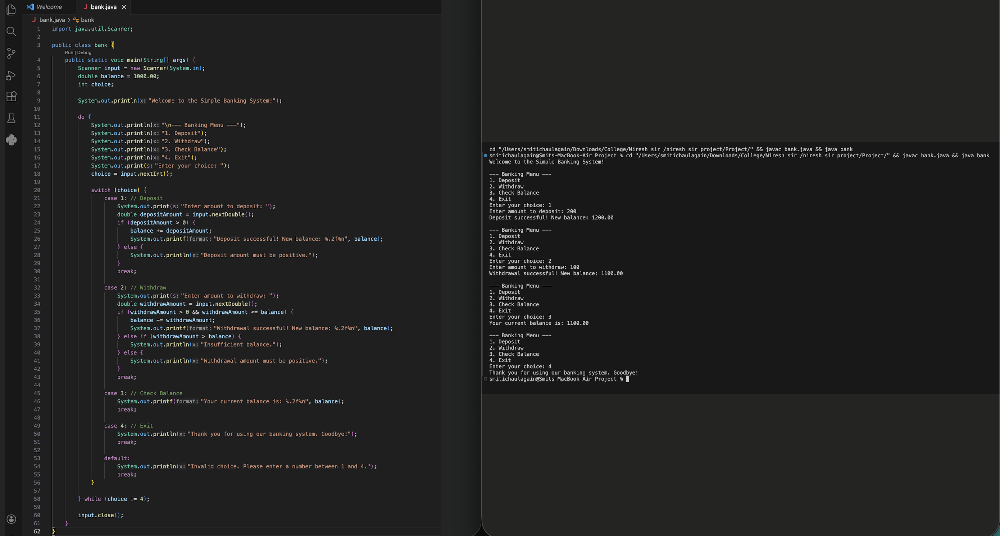

Project
Digital Canva- Personal Portfolio Wireframe
It is a contemporary personal portfolio wireframe that has been developed on the clean and professional dark theme. It has a systematic format on multiple page layout consisting of the sections Home, about, services, projects and contact. Its design is minimalist and includes high-contrast typography, circular profile pictures, grid-based cards in order to present skills and projects. Background decorative wireframe-like background details and a fixed top-right arrangement add to usability and create identity of the designer/developer.
Student Management System
This is a Java application installed in the desktop as a Swing and Object oriented programming based solution that handles student academic records. The system will enable users to add, search and display student data besides maintaining data persistence by processing data in files. It registers them in a text file, loads them when it starts and has input validation to prevent invalid or empty values that makes it useful and valid.
Math Logic GUI
Math logic GUI is a Java Swing application that calculates factorial and checks primes because it is event driven. A basic graphical interface is used where users can interact with input fields and buttons and the ActionListeners process user actions. The program has error handling capabilities to control invalid input and it is executed without crash.
Bank Console Application
It is a Java banking application written as a console program and tries to replicate the simple ATM processes namely deposit, withdrawal and checking the balance. It provides a loop-based menu, user input Scanner and switch-case logic as a means of handling transactions. The application is also validated to make the transactions secure like restricting negative amounts and overdrafts.
QR Code Generator
The given Python project characterizes a customized QR code with the help of qrcode library. It codes a given URL, sets customizable size and error correcting options and generates a clean black and white QR. The QR code generated is stored in the form of an image and it is displayed automatically to verify code.